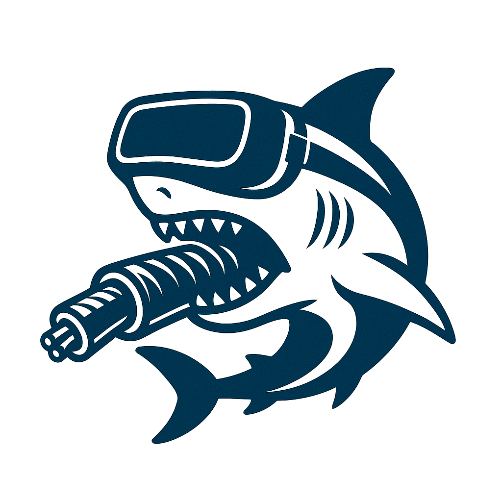

WireXRk is an Extended Reality (XR) visualization toolkit designed for aiding researchers in the development of new protocols and for enhancing the educational experience of telecommunications undergraduates. WireXRk enables network analysis and visualization providing a complement of traditional tools such as Wireshark.
WireXRk delivers an immersive experience with interactive 3D animated scenes, accessible via XR head mounted displays or desktop web browsers. These dynamic scenes vividly portray the movement of network packets as they traverse visual representations of network links, hosts and switches. The scenes are automatically generated from the network traffic previously captured in TCP/IP Network Experimentation Environments.
The NetGUI-Kathará Network Experimentation Environment provides support to generate the files required by WireXRk. It automatically captures traffic on all collision domains, merges the captures, and generates the topology information required by WireXRk animations.
WireXRk is Free (Libre) Software distributed with the GPL license.
You can view these WireXRk demos from a Firefox browser or from the browser of VR Oculus Quest Head Mounted Display: